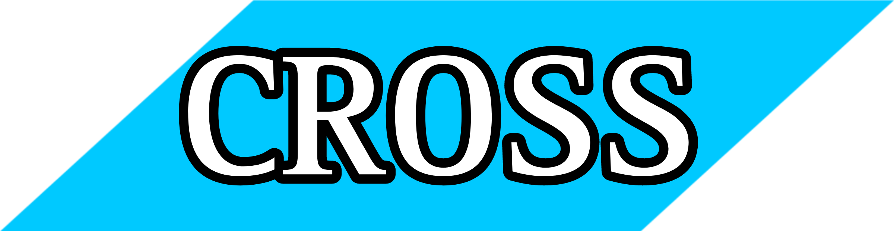
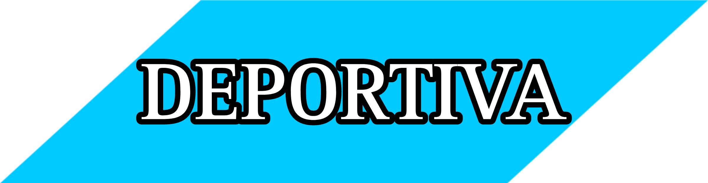
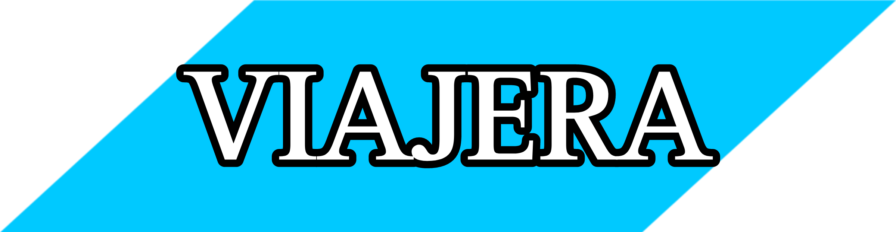
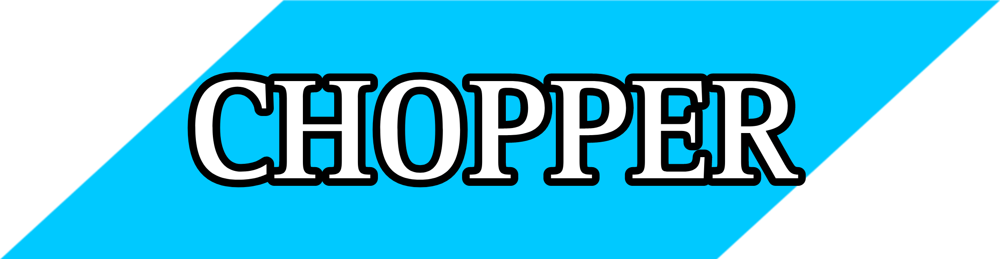
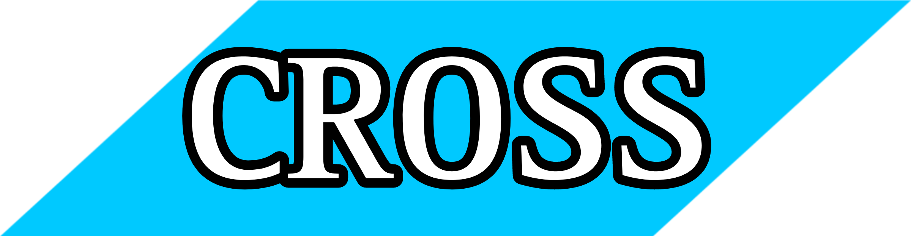
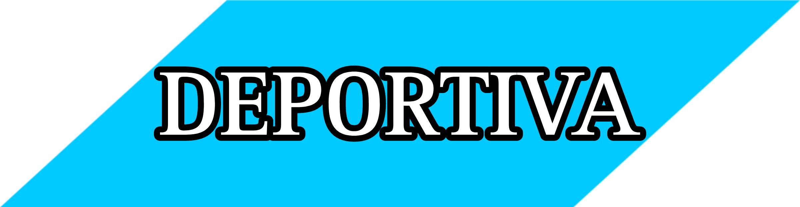
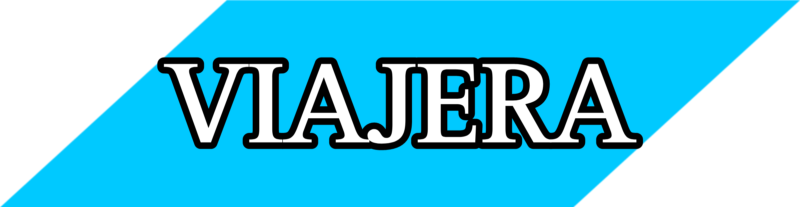
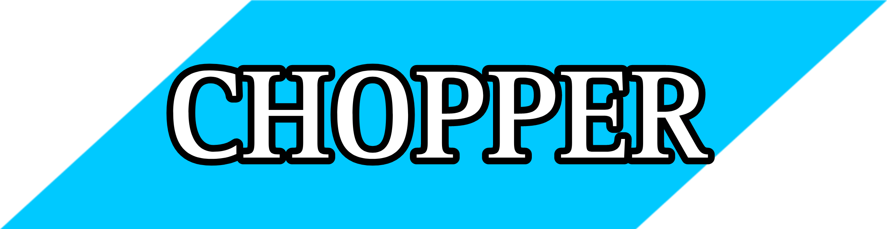

 -TODO LO QEU DEBES DE SABER E MOTOS DEPORTIVAS-
¿Qué se entiende como moto deportiva? Pues ni más ni menos que
aquella moto que es estudiada y pensada para ofrecer las mayores
prestaciones puras posibles. Ser la más rápida frente cronómetro,
disponer de la mejor y más rápida aceleración, el mejor y más veloz
paso por curva, la mayor estabilidad, la mejor frenada y la mayor
agilidad. Para ello se potencian especialmente muchos detalles muy
fáciles de detectar a simple vista y se prescinde de todo aquello
que no ayuda a bajar décimas.